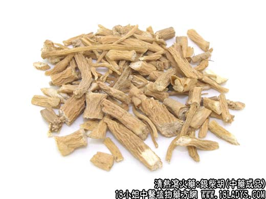

原文出处:本文转载自中药大全网。
原文连接:https://www.daquan.com/post/2170.html
原文连接:https://www.daquan.com/post/2170.html



银柴胡为较常用中药，“银柴胡”一名见于《本草纲目》的柴胡项下。至《本经逢原》及《本草纲目拾遗》始由柴胡项下分出。市售商品有银柴胡和山银柴胡两种，习惯认为银柴胡为正品，山银柴胡则品种复杂，京津地区在银柴胡短缺时也使用山银柴胡。
别名：西银柴胡。
来源：银柴胡为石竹科多年生草本植物银柴胡（狭叶岐繁缕）的干燥根，野生。
产地：主产于宁夏（银川），甘肃，陕西内蒙等省。
性状鉴别：呈圆柱形，长15~40厘米，直径1~2.5厘米，表面淡黄棕色或灰黄色，无分枝或少分枝。顶端有多数密集的小疣状突起，俗称“珍珠盘”，为残留的茎基痕。茎基痕脱落处白色。根上端及中部常生有不规则的圆形小凹孔，俗称“砂眼”。中部及下端浙细瘦，有多条略扭曲的纵皱沟纹旋绕全根。质松脆，易折断。断面淡黄白色，射线宽而疏松，呈黄白相间的放射状花纹，生砂眼处断面中有褐色砂粒包裹其中，为银柴胡特征之一。气微，味甘微苦。
以根条粗细均匀，表皮细，淡黄棕色，断面淡黄白色者为佳。
功效与作用：解热。
炮制：切片生用，或鳖血炒用。
性味：甘，微寒。
归经：入肝、肾经。
功能：清热凉血，除骨蒸。
主治：骨蒸劳热，小儿疳热等症。
临床应用：为治虚热和疳热的常用药，因能退热而不苦泄，被认为是“虚热之良药”。
1、用于治疗阴虚发热、痨热、骨蒸盗汗。可配青蒿、鳖甲、地骨皮，方如清骨散。
2、用于治疗疳热。因肠道寄生虫病而致营养不良、低热、眼结膜炎等所谓“肝疳”证候，可配栀子、黄芩、连翘。
用量：3~9g。
处方举例：清骨散（《证治准绳》）：银柴胡9g，胡黄连2g，鳖甲15g（先煎），青蒿6g，秦艽6g，地骨皮9g，知母9g，甘草3g，水煎服。